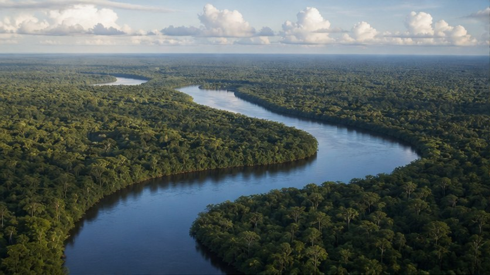

No encontré una voz en español instalada en este navegador. Activa o instala una voz de español en la configuración del sistema o del navegador.

Macroproceso de Gobernanza y Propósito
El Macroproceso de Gobernanza y Propósito representa la razón de ser de la Fundación Gaia Amazonas. Desde aquí se orienta la gobernanza territorial amazónica y se refrenda cada etapa del Acuerdo Intercultural.
Este macroproceso conecta la trayectoria institucional con la Ruta 2030. Reúne la voz de los pueblos indígenas, la Junta Directiva, la Dirección General y los aliados que sostienen la apuesta de GAIA por la autonomía territorial y el cuidado de la Amazonia.
Dependencias del Macroproceso de Gobernanza y Propósito
- Dirección General
Responsable: FRANCIS PHILIP VON HILDEBRAND REICHEL
Lidera la estrategia institucional, la relación con aliados y la orientación política. - Junta Directiva
Responsables: Jerónimo Rodríguez Rodríguez, Luis Donisete Benzi Grupioni, Brigitte Baptiste, Biviany Rojas Garzón, Luisa Fernanda Bacca y Harold Andrés Ospino.
Define lineamientos estratégicos y vela por la integridad institucional. - Autoridades Indígenas (AATI)
Responsables: autoridades y gobiernos indígenas aliados
Orientan el enfoque intercultural, territorial y político del Acuerdo Intercultural. - Donantes y socios estratégicos
Responsables: aliados de cooperación y socios institucionales
Sostienen la viabilidad financiera y política de la Ruta 2030.
Ver tablero de donantes y socios
Aporte a la Ruta 2030
Su aporte es mantener una orientación clara para la Fundación: cuidar la coherencia entre el propósito, las decisiones institucionales y la relación respetuosa con las AATI, los donantes y los socios estratégicos.